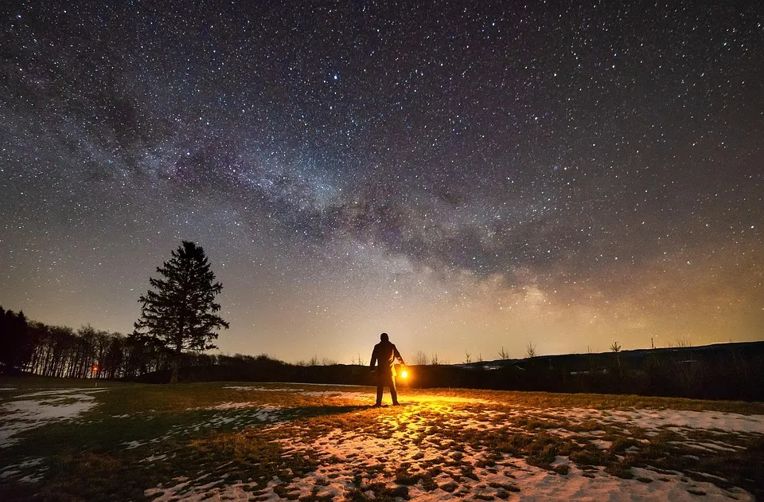

Quem Sustenta Todas as Coisas?
Quando olhamos para o universo, percebemos que tudo o que existe não se mantém por si mesmo. Há uma força superior que sustenta cada detalhe da criação. A Bíblia nos revela que é Deus quem criou todas as coisas e, ainda hoje, mantém tudo em perfeita ordem.
Foi Ele quem fez os céus, os planetas, os mundos e os universos. Ele estabeleceu o sol, os dias e as noites, determinando que tudo tivesse continuidade sem precisar da intervenção humana. Deus criou também os ventos, o ar que respiramos e as águas que caem como chuva para alimentar as fontes e manter a vida.
Assim, todo ser humano, independente de quem seja ou no que creia, recebe diariamente das mãos de Deus a água e o alimento que vêm da terra. Cada planta, árvore e fruto brotam porque Ele sustenta. Isso significa que ninguém vive sem a provisão do Criador.
Mas não é apenas a natureza que depende de Deus. Toda forma de vida é sustentada por Ele. Desde os menores organismos até os maiores, todos foram criados e são mantidos por Seu poder. O funcionamento de cada célula, os processos vitais como respiração, circulação, digestão e até a multiplicação celular — tudo está sob Seu cuidado.
Nos céus, nos mares, nos campos, nas florestas, nos rios ou até mesmo nos desertos mais áridos, a vida existe porque Deus a sustenta. Ele formou cada ser vivo e determinou o tempo de sua existência. Desde a menor célula invisível aos nossos olhos até os maiores organismos já criados, tudo depende da mão poderosa do Senhor.
Portanto, ao contemplarmos a criação, lembramos que não estamos sozinhos. Nossa vida, nossas forças e até mesmo o alimento de cada dia são dádivas que vêm de Deus. Ele é quem fez, quem faz e quem continuará sustentando todas as coisas.
👉 Reflexão final: Reconhecer que tudo vem de fora de você. Como se a "casa" fosse arrumada para sua chegada. Nosso Pai celestial organizou tudo, fez tudo e sustenta tudo.
- Essencialista